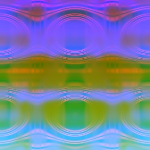
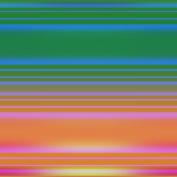
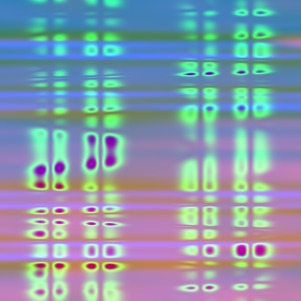

PROGRAMMING PROJECTS
Working on an iOS app for Greenwich Academy and Brenswick school's dining halls. The app will soon be released in the apple's app store. The app will post weekly menus from schools dining halls: Greenwich Dining Hall and Brunswick Dining Hall. Further, the app will do more than just tell users what is available in the dining halls. It will allows students to find specific dishes, navigate the menus based on specific dietary needs, and also notify the users via pop notification when their faviorite dish is served in the dining halls.
Started solving project Euler problems in python. Project Euler is a series of challenging mathematical/computer programming problems that requires mathematical insights and programming skills to solve them.
The project code can be found here
This project simplifies regular expression in Swift. As of iOS 4, NSRegularExpression is build in to Framework libarary in Swift. However, the libarary doesn't have a very user friendly syntax and leaves most of the work to the user. SwiftRegEx provides a simplified usage of NSRegularExpression.
The source code for library can be downladed from here.
Winner of Ward Prize for Best Student Project 2015, Williams College
Completed by a team of 9 Williams College Computer Science students, including me. Our work was inspired by Peter Wonka's Procedural Building Generation. The buildings were designed using C++ based 3D game engine called G3D. I was responsible for building stack based grammer that was used to define the building structures, writing code to place the buildings appropriately in the city and to integrate the texture and material files into the building grammer.
Complete documenentation of the project can be found here
Presentation slides of the project can be found here
Completed by a team of 3 Williams College Computer Science students, including me. We procedurally generated levels for the Mirror's edge game. I was responsible procedurally generating interesting and playable paths in the game. I was also responsible to procedurally generate the layout and placement of the buildings for the game.
Presentation slides of the project can be found here
Developed a virtual emulator called WAVE (Williams Academic Virtual Emulator) for a RISC processor called WArm (Williams Arm Risc Machine) on a CISC processor called WIND (Williams Instructional Demon- strator) to simulate the program execution on a RISC machine. WArm architectural manuel can be found here
The project code can be found here!
This project was completed by a team of 2 Williams College Computer Science students, including me. Inspired by the game called Space Narwhal, we designed this 2 person game on a 3D engine called G3D.
Implemented Whitted's [78] recursive ray tracer with shadows and reflection with 2 other Williams College Computer Science students. The below images were created by the recursive raytracer. The water was created by a random art generator. The program creates random art over time. The end result was water like ripples for certain random art functions.


The completed documentation of the project can be found here .
Implemented various Machine Learner and Classifier Algorithms.
- Naive Bayes Learner and Classifier
- Linear Regression Algorithm for Real Valuses
- Backpropogation Algorithm with one hidden layer
- Ada Boost Algorithm to train any weak learner
- K-means clustering Algorithm
Wrote random art generator in ML. The following are the random art generated by the random art generator. The source code can be found here.


Implemented computer player for the tictactoe game.
The project source code can be viewed here.
Implemented simple javascript game of snakes and ladders.
The game can be played here